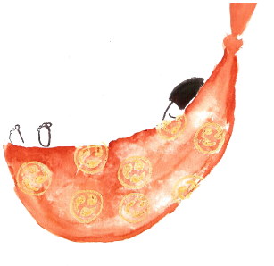

Pomysł na projekt zrodził się z miłości do dzieci, do teatru, do lalek, z sentymentu do historii z cyklu “Poczytaj mi, mamo”...
i z czegoś co dziś możemy nazwać “ciekawością twórczą”.
Krystyna Bocheńska i Natalia Leszczyńska
Ideą projektu było stworzenie spektaklu dla dzieci jako efektu poszukiwań i inspiracji zrodzonych w bezpo-
średnim kontakcie z najmłodszym widzem oraz stworzenie platformy do współpracy na linii rodzice - peda
godzy - artyści. Punktem wyjścia naszych działań były warsztaty z dziećmi oraz konsultacje z pedagogami i
rodzicami. Warsztaty oraz próby do spektaklu “Małe historie” trwały od kwietnia do czerwca 2014 roku.
Projekt "I co było dalej...?" dofinansowano ze środków Ministerstwa Kultury i Dziedzictwa Narodowego
Partnerzy projektu
Dom Kultury „Świt” w Warszawie
Dom Kultury Śródmieście w Warszawie
Centrum Kultury Prawosławnej w Warszawie
Przedszkole Integracyjne nr 312 w Warszawie
Przedszkole Specjalne nr 249 w Warszawie
Przedszkole Samorządowe nr 184 w Warszawie
Szkoła Podstawowa nr 267 w Warszawie
Szkoła Podstawowa nr 258 w Warszawie
VII Ogród Jordanowski w Warszawie
Przestrzeń Kultury soojka.pl
Ekipa projektu
Natalia Leszczyńska
Anna Szawiel
Katarzyna Mazurek
Anna Wojtecka
Rafał Leszczyński
Julia Umeda-Zasacka
Krystyna Bocheńska
Piotr Bocheński
Magdalena Jeżak
Sylwia Zielińska
Kalendarium zdarzeń „I co było dalej”
Poznaj historię projektu [+]
31 maja 2014– Spotkanie dla twórców,pedagogów,animatorów i rodziców w siedzibie fundacji Ponadto (Buddaplay, ul. Białostocka 9)
3 czerwca2014 – Warsztaty w Przedszkolu Samorządowym nr184
8 czerwca2014 – Warsztaty w CentrumKulturyPrawosławnej
10 czerwca 2014 – Warsztaty w VII OgródkuJordanowskim
12 czerwca 2014 – Warsztaty w Przedszkolu Specjalnym nr 249
16 czerwca 2014 – Warsztaty w Przedszkolu Integracyjnym nr312
22 czerwca 2014 – Pokaz przedpremierowy „Małych Historii” w Centrum Kultury Prawosławnej
23 czerwca2014 – Pokaz przedpremierowy „Małych Historii” w Przedszkolu Integracyjnym nr 312
24 czerwca 2014 - Pokaz przedpremierowy „Małych Historii” w Przedszkolu Samorządowym nr 184
26 czerwca 2014 - Pokaz przedpremierowy „Małych Historii” w Przedszkolu Specjalnym nr 249
26 czerwca 2014 - Pokaz przedpremierowy „Małych Historii” w Domu Kultury Świt
27 czerwca 2014 – Pokaz przedpremierowy „Małych Historii” w VII Ogródku Jordanowskim
Pracowite wakacje – ewaluacja, rozmyślania, konsultacje, zmiany
28 września 2014 - PREMIERA w Domu Kultury Śródmieście w Warszawie, scena na ul. Smolnej
4 października 2014 – POKAZ PLENEROWY „Małych Historii” w parku Picassa w Warszawie(Białołęcki Ośrodek Kultury)
16 października 2014 – trzy pokazy „Małych Historii” w Szkole Podstawowej nr 267 w Warszawie, ul. Braci Załuskich 1
21 października 2014 - trzy pokazy „Małych Historii” w Filii Szkoły Podstawowej nr 258 w Warszawie, ul. Namysłowska 1
8 listopada 2014 – spotkanie i konsultacje dla twórców, pedagogów i animatorów oraz warsztaty dla dzieci w Przestrzeni Kultury Soojka w Łomiankach
15 listopada 2014 – ogłoszenie wyników konkursu MOJA PIERWSZA RECENZJA
30 listopada 2014 – Zakończenie... I co będziedalej?
„Małe historie”
Spektakl Małe Historie powstał w ramach projektu „I co było dalej?...” realizowanego przez Ma Fundację przy wsparciu Ministerstwa Kultury i Dziedzictwa Narodowego.
Scenariusz opiera się na czterech tekstach: Wiera Badalska „Muzyka na krzywej wieży”, Joanna Papuzińska „Agnieszka opowiada bajkę”, Maria Łaskowiecka-Cieślak „Kto kiedy zasypia”, Wanda Chotomska „Mój piękny złoty koń". Akcja toczy się w dwóch planach. Łączy je postać Mamy, która uwielbia opowiadać historie, a najbardziej lubi zdradzać rozmaite sekrety dzieciom. Spektakl jest fuzją teatru lalek, teatru ożywionej formy, improwizacji aktorskiej i muzycznej ze światem dzieci.
Aktorka, lalkarka, opowiadaczka. Prowadzi autorską audycję w Radio Bajka, gdzie na antenie na żywo wymyśla bajki razem ze słuchaczami. Swoje badania dotyczące metodologii opowiadania i zbierania baśni prowadzi w ramach Ma Fundacji. Poszukuje na styku teatru, rytuału i sztuki akcji, która dociera do małych i dużych tak, by mówić o sprawach najważniejszych w sposób najprostszy i magiczny zarazem. W “Małych historiach” wciela się w postać Mamy, animuje lalki, gra na akordeonie i śpiewa.
Anna Szawiel (reżyseria, adaptacja tekstu)
Absolwentka białostockiego Wydziału Sztuki Lalkarskiej Akademii Teatralnej im. Aleksandra Zelwerowicza w Warszawie, Szkoły Muzycznej II stopnia w Białymstoku i Wydziału Dziennikarstwa na Uniwersytecie Warszawskim. Grała m.in. w spektaklach „SuperMarket” (2005) Jerzego Lacha w warszawskim Teatrze Wytwórnia, „Usługi płatne” (2008) Anny Piotrowskiej w stołecznym Mufmi Teatrze Tańca. Związana z niezależną sceną teatralną.
Katarzyna Mazurek (lalki)
Aktorka teatralna i filmowa, absolwentka szkoły teatralnej Studium Aktorskie w Olsztynie. Studiowała pedagogikę ogólną oraz kulturoznawstwo na Uniwersytecie Warszawskim. Malarka, projektantka, rzeźbiarka. Współpracowała z Teatrem Dramatycznym im. A. Mickiewicza w Częstochowie, z Teatrem Dramatycznym im. S. Jaracza w Olsztynie. Odtwórczyni roli tytułowej w filmie Anniki Glac „Bunny”. Realizuje projekty plastyczne, projektuje i wykonuje lalki teatralne.
Zaproś nas
Spektakl (monodram) powstał z myślą o prezentacji również w warunkach nieteatralnych. Trwa około 45 min, akcja/zabawa “Moja pierwsza recenzja” około 20 min. Jeśli chcieliby Państwo zaprosić “Małe Historie”, prosimy o kontakt:
Po spektaklach proponujemy widzom udział w akcji/zabawie „Moja pierwsza recenzja”. Rozdajemy kartki
pocztowe i zachęcamy do wysłania pozdrowień i swego rodzaju recenzji bezpośrednio po spektaklu.
Zaprosiliśmy Was do konkursu “Moja pierwsza recenzja”.Czekaliśmy na Wasze pisane lubobrazkowe recenzje.
Konkurs skierowany był zarówno do adresatów naszych teatralnych pocztówek, jak i innych małych
wielbicieli teatru. Szczegółowe zasady konkursu znajdą Pastwo wregulaminie:
Dziękujemy wszystkim uczestnikom za nadesłane zdjęcia prac i kartek pocztowych. Mamy nadzieję, że ich dalsze pocztowe życie przyniosło adresatom wiele radości.
Jury starało się wnikliwie i rzetelnie ocenić prace. Wybór był bardzo trudny, spośród nadesłanych prac Jury wybrało łącznie 5 prac zwycięskich.
I nagrodę:
książkę Poczytaj mi, mamo. Księga pierwsza, Nasza Księgarnia 2010 otrzymuje Eliza Bączek lat 5 – „Za plastyczny wyraz życia i wolności, za wiatr we włosach...”
(pocztówka ze spektakluMałe Historie granegowVII Ogródku Jordanowskim w Warszawie 27.06.2014)
II nagrodę:
książkę Tove Jansson, Muminki. Księga pierwsza, Nasza Księgarnia 2012 otrzymuje Aleksandra Mazurowska lat 7 – „Za pracowitość i pomysłowość” (pocztówka ze
spektaklu Małe Historie granego 21.10.2014 r. w SP nr 258 w Warszawie)
III nagrodę:
siążkę Agnieszka Ociecka dzieciom, Nasza Księgarnia 2010 otrzymuje Julia Tuśnio lat7 – „Za urokliwy obraz naszego konia” (pocztówka ze spektaklu Małe Historie
granego 21.10.2014 r. w SP nr 258 w Warszawie
Jury przyznało również dwa wyróżnienia:
1. Danusia Kotynia lat 7 – „Za dobrą energię” (pocztówka ze spektaklu Małe Historie granego w Szkole Podstawowej nr 267. Nagrodą jest książka: Ewa Kozyry-Pawlak, Ja Bobik, Nasza Księgarnia2014
2. Łucja Sala lat 7 – „Za pracowitość i cudowne kolory”(pocztówka ze spektaklu Małe Historie granego wSP 267 w Warszawie) Nagrodą jest książka: Izabela Mikrut,
Co się zdarzyło w piórniku, Nasza Księgarnia 2014
Zapraszamy do galerii nagrodzonych prac.
Jury: Natalia Leszczyńska, Julia Umeda-Zasacka, Krystyna Bocheńska

Mafundacja
Fundacja MaFundacja jest nową rozwijającą się organizacją stworzoną przez osoby, które
zajmują się kulturą,sztuką i edukacją. Wspólnie chcemy wspierać i inicjować działania, które w artystyczny sposób mówią o tym, jak różni jesteśmy,
a jednocześniepozwalają zauważać, jak wiele mamy ze sobą wspólnego.
Ma Fundacja – współpraca i wsparcie
Jeśli chcieliby Państwo z nami współpracować lub podzielićsię z nami opinią na temat działań Ma Fundacji, czekamy na maile
icobylodalej@gmail.com
Osoby chcące wesprzeć nas finansowo zachęcamy do dokonywania wpłat na konto
Bank BGŻ 25203000451110000002579370
Ma Fundacja; ul. Śmiała 50/3, 01-526 Warszawa
Mądrze wydamy każda złotówkę. Liczy się nawet najmniejsza kwota – dla nas 5 zł to klej, 10 zł ryza papieru, a 15 zł to dobre kredki ;-)
Fundacja Ma Fundacja
Śmiała 50m.3 01-526 Warszawa
Regon: 146500880, NIP 5252546899